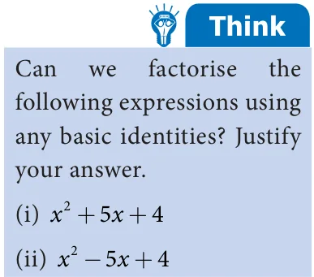

<!DOCTYPE html>
<html lang="en">
<head>
<meta charset="UTF-8">
<meta name="viewport" content="width=device-width,initial-scale=1">
<title>3.4 Factorisation using identities — Algebra</title>
<meta name="description" content="Class 7 Mathematics · Term 3 · Algebra · 3.4 Factorisation using identities">
<link rel="icon" href="data:image/svg+xml,<svg xmlns='http://www.w3.org/2000/svg' viewBox='0 0 100 100'><text y='.9em' font-size='90'>📘</text></svg>">
<link rel="stylesheet" href="../../../assets/book.css">
<link rel="stylesheet" href="https://cdn.jsdelivr.net/npm/katex@0.16.11/dist/katex.min.css" crossorigin="anonymous">
</head>
<body>
<header class="topbar">
<div class="topbar-in">
  <div class="crumb">
    <span class="c1"><a href="../../../index.html">Library</a> · <a href="../../index.html">Class 7 Mathematics · Term 3</a></span>
    <span class="c2">Algebra · 3.4 Factorisation using identities</span>
  </div>
  <a class="tb-btn" data-nav="prev" href="../../03-algebra/03-geometrical-proof-of-identities-3.3/index.html" title="3.3 Geometrical proof of Identities">←</a>
  <details class="drawer"><summary class="tb-btn" title="Sections in this chapter">☰</summary>
<div class="drawer-panel"><div class="dh">Algebra</div><a href="../01-chapter-opener/index.html">Chapter opener; 3.1 Introduction to Identities</a><a href="../02-geometrical-approach-to-multiplication-of-monomials-3.2/index.html">3.2 Geometrical Approach to Multiplication of Monomials</a><a href="../03-geometrical-proof-of-identities-3.3/index.html">3.3 Geometrical proof of Identities</a><a href="../04-factorisation-using-identities-3.4/index.html" aria-current="page">3.4 Factorisation using identities</a><a href="../05-exercise-3.1/index.html">Exercise 3.1</a><a href="../06-inequations-3.5/index.html">3.5 Inequations</a><a href="../07-exercise-3.2/index.html">Exercise 3.2</a><a href="../08-exercise-3.3/index.html">Exercise 3.3</a><a href="../09-summary/index.html">Summary</a><a href="../10-ict-corner/index.html">ICT Corner</a></div></details>
  <a class="tb-btn" data-nav="next" href="../../03-algebra/05-exercise-3.1/index.html" title="Exercise 3.1">→</a>
  <button class="tb-btn" data-theme-toggle title="Toggle light / dark" aria-label="Toggle light or dark theme">◐</button>
</div>
<div class="progress"><span style="width:45.8%"></span></div>
</header>
<main class="wrap">
<div class="sec-head">
  <p class="eyebrow"><a href="../index.html">Chapter 3 · Algebra</a></p>
  <h1>3.4 Factorisation using identities</h1>
  <p class="sec-meta">Textbook pages 12–14 · 2 figures</p>
</div>
<article class="prose">
<p>A factor of a number is the number that exactly divides a given number without leaving any remainder. For example, the factors of 4 are 1, 2 and 4; the factors of 12 are 1, 2, 3, 4, 6 and 12. And, the number can be expressed as product of its factors such as</p>
<p>= In the same way, algebraic expressions also have factors that divide the expression exactly. Given an algebraic expression, the factors of that algebraic expression are two</p>
<div class="mathblock"><p>\(12 1 \times 12\) or \(2 \times 6\) or \(3 \times 4\).</p></div>
<p>or more expressions whose product is the given expression. For example, \(x y = x \times x \times y\) ,</p>
<p>hence the factors of the algebraic expression x y are x, x and y.</p>
<p>Therefore, (x +2) and \((=x - 2)\) are the factors of x -4.</p>
<p>Consider the algebraic expression x -4.</p>
<p>Now, \(x - =4 x - 2\) (x \(+ 2)(x - 2)\) [because \(a - b =(a +b)(a -\) b)]</p>
<p>Obviously, 1 is also a factor of x -4.</p>
<p>We know that, \(x = x \times x\) . Similarly, (x \(+5) =(x +5) \times\) (x +5).</p>
<p>Thus, the factors of (x \(+ 5)\) are (x \(+ 5)\) and (x \(+ 5)\). The process of writing an algebraic expression as the product of its factors is called factorisation.</p>
<p>We shall learn more to factorise algebraic expressions, using the basic identities.</p>
<p>Example 3.5 Express the following algebraic expressions as the product of its factors:</p>
<ul class="qlist">
<li><span class="mk">(i)</span><span class="lt">ab (ii) -3pq (iii) 12m n p</span></li>
</ul>
<h4 class="callout-h" id="s-solution">Solution</h4>
<ul class="qlist">
<li><span class="mk">(i)</span><span class="lt">ab \(=a \times b \times b\).</span></li>
</ul>
<p>Example 3.6 Factorise by using the identity:= \(a =-b\) (a \(+b)(a -\) b)</p>
<ul class="qlist">
<li><span class="mk">(ii)</span><span class="lt">\(- 3pq = - \times 3 p \times q \times q \times q\) .</span></li>
</ul>
<ul class="qlist">
<li><span class="mk">(iii)</span><span class="lt">\(12 m n p 4 \times 3 \times m \times m \times n \times n \times p 2 \times 2 \times 3 \times m \times m \times n \times n \times p\).</span></li>
</ul>
<ul class="qlist">
<li><span class="mk">(i)</span><span class="lt">a -1 (ii) 9k -25 (iii) \(64=x - 81y\)</span></li>
</ul>
<p>Therefore, the factors of \(= a -1\) are (a \(+ 1)\) and (, \(= a - 1).=\)</p>
<h4 class="callout-h" id="s-solution">Solution</h4>
<ul class="qlist">
<li><span class="mk">(i)</span><span class="lt">\(a - =1 a - 1\) (a \(+ 1)(a - 1)\) [since \(1 1 \times 1 1]\)</span></li>
</ul>
<div class="mathblock"><p>\((3k + 5)(3k - 5)\) , since, \(a - b =(a +b)(a -\) b)</p></div>
<ul class="qlist">
<li><span class="mk">(ii)</span><span class="lt">\(9k - 25=(3 \times k\) ) \(- 5 =(3k) - 5\) [since \(a \times b =(a \times\) b) ]</span></li>
</ul>
<p>Therefore, the factors of \(=9k -25\) are \((3k + 5)\) and \((3k - 5)\).</p>
<ul class="qlist">
<li><span class="mk">(iii)</span><span class="lt">\(64x - 81y =(8 \times x\) ) \(- (9 \times y )=(8x) - (9y)\)</span></li>
</ul>
<div class="mathblock"><p>\(=(8x +9y)(8x - 9y)\)</p></div>
<p>Therefore, the factors of 64x -81y are \((8x + 9y)\) and \((8x - 9y)\).</p>
<p>Example 3.7 Factorise 9x +30xy +25y</p>
<h4 class="callout-h" id="s-solution">Solution</h4>
<div class="mathblock"><p>\(9x +30xy +25y =(3 \times x )+(2 \times 3 \times 5) \times\) xy \(+(5 \times y\) )</p></div>
<div class="mathblock"><p>\(=(3x) +2 \times (3x) \times (5y)+(5y)\)</p></div>
<p>This expression is in the form of identity \(a + 2ab + b = (a+b)\) .</p>
<p>Therefore, the factors of \(9x +30xy +=25y\) are (3x+5y) and (3x+5y).</p>
<div class="mathblock"><p>Hence, \((3x) +2 \times (3x) \times (5y)+(5y) =(3x +5y)\)</p></div>
<div class="mathblock"><p>(3x+5y)(3x+5y).</p></div>
<p>Example 3.8 Factorise \(4x - 4xy + y\)</p>
<h4 class="callout-h" id="s-solution">Solution</h4>
<div class="mathblock"><p>\(4x - 4xy + y =2 \times x - (2 \times 2) \times\) xy \(+ y\)</p></div>
<div class="mathblock"><p>\(=(2x) - \times 2 (2x) \times y + y\)</p></div>
<div class="mathblock"><p>\((2x) - \times =2 (2x) \times =y + y =(2x -\) y)</p></div>
<p>This expression is in the form of identity \(a - 2ab + b =\) (a - b) . Say 2x a and y b, thus we have,</p>
<figure class="fig side-fig"></figure>
<p>Therefore, the factors of \(=4x - 4xy + y (2x -\) y) and \((2x -\) y). Example 3.9 are Factorise: \(x^{2} - 2xy + y^{2} - z^{2}\)</p>
<p>\((2x - y)(2x -\) y)</p>
<h4 class="callout-h" id="s-solution">Solution</h4>
<p>Therefore, \((x= -\) y) \(- z == a - b\)</p>
<div class="mathblock"><p>\(x - 2xy + y - z =(x - 2xy + y\) ) \(- z =(x -\) y) \(- z\) [by identity-3]</p></div>
<p>Let, (x - y) a and z b.</p>
<div class="mathblock"><p>Hence, \(x - 2xy + y - =z\) (x \(- y +\) z)(x \(- y -\) z).</p></div>
<p>Therefore, the factors of \(x = - 2xy + y - z\) are (x \(- y +\) z) and (x \(- y -\) z).</p>
<p>We know that, a -b (a + b)(a - b) [Identity-4]</p>
<p>Here is an interesting number game to thrill your friends. Follow the steps.</p>
<ul class="qlist">
<li><span class="mk">1.</span><span class="lt">Ask your friend to think a number in mind. Let the number be in between 1 to</span></li>
<li><span class="mk">10.</span><span class="lt">(for example, let the number be 5).</span></li>
<li><span class="mk">2.</span><span class="lt">Double the number and add to its square. (So, \(10 + 25 = 35)\).</span></li>
<li><span class="mk">3.</span><span class="lt">Add one to the result. (So, \(35 + 1 = 36)\).</span></li>
<li><span class="mk">4.</span><span class="lt">Ask the final resultant number.</span></li>
<li><span class="mk">5.</span><span class="lt">The number will be a perfect square. Consider its base in the exponent form and</span></li>
</ul>
<p>reduce 1 from it. The result is the number in your friend’s mind. ( the base; so, \(6 - =1 5\) ). Remember the perfect square numbers and their corresponding base numbers</p>
<p>1®1, 4 ® 2 , 9® 3 , 16® 4 , 25® 5 , 36® , ® ,</p>
<p>100®10</p>
<figure class="fig wide"></figure>
<ul class="qlist">
<li><span class="mk">1.</span><span class="lt">Fill in the blanks.</span></li>
<li><span class="mk">(ii)</span><span class="lt">The product of \((= x + 5)\) and (x \(- 5)\) is ----------------------.</span></li>
<li><span class="mk">(i)</span><span class="lt">(p-q) ----------------------------.</span></li>
</ul>
<ul class="qlist">
<li><span class="mk">(iii)</span><span class="lt">The factors of \(x - 4x +4\) are -----------------------------.</span></li>
</ul>
<ul class="qlist">
<li><span class="mk">(iv)</span><span class="lt">Express 24abc as product of its factors is ---------.</span></li>
</ul>
<ul class="qlist">
<li><span class="mk">2.</span><span class="lt">Say whether the following statements are True or False.</span></li>
<li><span class="mk">(i)</span><span class="lt">\((7x + 3)(7x - 4)= 49x - 7x - 12\) .</span></li>
</ul>
<ul class="qlist">
<li><span class="mk">(ii)</span><span class="lt">(a \(- 1) =a - 1\).</span></li>
</ul>
<ul class="qlist">
<li><span class="mk">(iii)</span><span class="lt">(x \(+ y\) )(y \(+ x )=(x + y\) ) .</span></li>
</ul>
<ul class="qlist">
<li><span class="mk">(iv)</span><span class="lt">2p is a factor of 8pq.</span></li>
<li><span class="mk">3.</span><span class="lt">Express the following as the product of its factors.</span></li>
<li><span class="mk">(i)</span><span class="lt">24 ab c .</span></li>
</ul>
<ul class="qlist">
<li><span class="mk">(ii)</span><span class="lt">36 x y z.</span></li>
</ul>
<ul class="qlist">
<li><span class="mk">(iii)</span><span class="lt">56 mn p .</span></li>
</ul>
<ul class="qlist">
<li><span class="mk">4.</span><span class="lt">Using the identity (x \(+a)(x +b)= x +\) x(a +b)+ab , find the</span></li>
</ul>
<p>following product.</p>
<ul class="qlist">
<li><span class="mk">(i)</span><span class="lt">(x \(+ 3)(x + 7)\) (ii) \((6a + 9)(6a - 5)\)</span></li>
<li><span class="mk">(iii)</span><span class="lt">\((4x + 3y)(4x + 5y)\) (iv) \((8 +\) pq)(pq \(+ 7)\)</span></li>
</ul>
</article>
<nav class="pager"><a class="" data-nav="prev" href="../../03-algebra/03-geometrical-proof-of-identities-3.3/index.html"><span class="dir">← Previous</span><span class="t">3.3 Geometrical proof of Identities</span><span class="ch">Algebra</span></a><a class="nx" data-nav="next" href="../../03-algebra/05-exercise-3.1/index.html"><span class="dir">Next →</span><span class="t">Exercise 3.1</span><span class="ch">Algebra</span></a></nav>
</main><footer class="site">Generated from the source textbook PDFs · text, figures and exercises belong to their respective publishers.</footer><script defer src="https://cdn.jsdelivr.net/npm/katex@0.16.11/dist/katex.min.js" crossorigin="anonymous"></script>
<script defer src="https://cdn.jsdelivr.net/npm/katex@0.16.11/dist/contrib/auto-render.min.js" crossorigin="anonymous"
  onload="renderMathInElement(document.body,{delimiters:[
    {left:'\\(',right:'\\)',display:false},
    {left:'$$',right:'$$',display:true},
    {left:'\\[',right:'\\]',display:true}],throwOnError:false,ignoredTags:['script','noscript','style','textarea','pre','code']})"></script>
<script src="../../../assets/book.js"></script>
</body>
</html>
